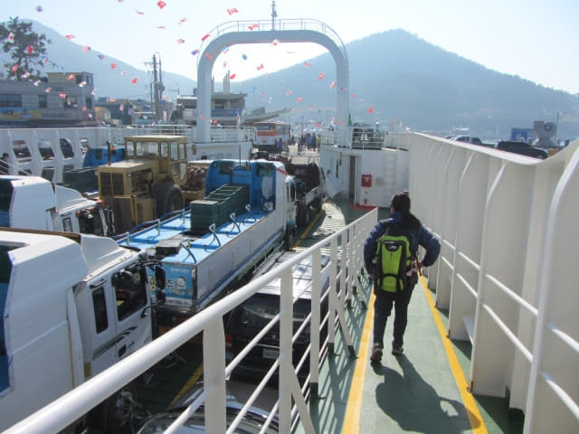

渡輪準時於早上八時三十分從莞島沿岸客運碼頭出發, 於早上九時十五分便抵達慢遊城市(Slow City) — 青山島 (청산도 Chungsando); 所謂慢遊城市, 旅客在這裡可悠閒的散步、慢慢體驗生命、作夢、身心放鬆、休憩、尋找心靈等愜意的非現代生活, 這正是 Slow City 的真正魅力。韓國共有五個地方被列入 Slow City 名單中, 分別是莞島郡青山島、新安曾島、全羅南道長興、慶尚南道河東、潭陽昌平。而青山島在 2007 年被指定為慢城, 是亞洲最早的慢遊城市。
雖說是慢遊城市, 正當我們準備下船, 大部份乘客早已跑到離碼頭很遠的地方。

慢慢的下船。
為了體驗慢遊方式, 我們當然也不急於離開, 在碼頭附近先流連一會。其實, 我們的旅遊方式一向都以悠閒為主, 很少追趕行程, 畢竟, 旅遊就是為了放開眼界, 增廣見聞, 身心放鬆和多獲得一些享受, 沒理由弄得神經緊張。
慢遊城市的蝸牛標誌。
蝸牛城市 — 青山島。

青山島慢遊步行路線
青山島共有十一條建議的慢遊步行路線, 全長約四十三公里。遊客可按自己的體能和時間, 選擇合適自己的步行路線, 沿途都有清晰的標示, 就好像濟州島的偶來小路一樣, 很少會迷途的。
青山島碼頭這裡是1號和11號步行路線的起點, 也是最多旅客行走的一段。1號步行路線的風景最美, 而11號步行路線最短和最容易。
悠閒的青山島漁港, 風景十分優美; 藍天碧海, 望著漁船來來往往, 十分寫意, 幾乎忘記我們還未找旅館, 直至….。
可能我們負著背囊在碼頭流連太久, 有一位警察走來, 用流利英文問我們安排了住宿沒有? 我們說沒有。
「有沒有打算住宿的旅館?」他繼續問。
看清楚, 原來他就是我們在渡輪上問座位在那一個船艙的那位警察。
在起初策劃路線時, 發覺青山島較有素質的住宿十分昂貴, 所以沒有打算在島上留宿的, 但青山島畢竟是我們這韓國春天之旅的其中一個重點行程, 如果只逗留大半天, 未免有點可惜; 最後再仔細重新搜尋, 終於發現一間鄉村形式的民宿, 素質看來很好的, 最重要是價錢在可以接受的範圍內。因為我們不是星期六或星期日去青山島, 所以並不擔心沒有房間。
「有的!」接著將寫上旅館資料的紙條遞給他看。
청산빌리지펜션
Rm: 허브(2층) 주중(平日): W80,000/2人
電話:010+9440+9345 或 356-1065-2392
他看了一看, 問了我的姓名, 便立即打電話給旅館, 嘰哩咕嚕了一會後, 叫我們留在碼頭前的旅客服務中心大樓等候, 然後乘警車離開。估計他是叫旅館的人來接我們吧。
等候期間, 我們便在旅客服務中心大樓外四處閒逛和拍照, 但不敢走得太遠, 恐怕旅館的人來時看不到我們。
等了十多分鐘, 有一輛銀灰色的吉普車駛來旅客服務中心大樓外停下來, 坐在司機旁的乘客先下車, 然後向我們走來, 原來是剛才那位警察, 接著司機也下車, 走來和我們握手, 介紹他是旅館的主人, 確定了我們的姓名和打算下榻旅館的名稱, 寒暄一番後, 便叫我們上車。
這時才知道, 原來那位警察除了幫我們聯絡旅館的主人, 還帶他來這裡接我們! 前天在木浦才坐了免費警車, 今天又得到那麼熱心的幫助, 韓國的警察真是很熱情!
上了車, 駛離碼頭, 民宿主人刻意將車駛上山上, 兜了一個圈, 讓我們俯瞰下面田野和海港的優美景色, 不斷用韓語介紹沿途風光, 只可惜我們聽不懂, 接著向下在油菜花田中穿過, 感覺有如置身圖畫中, 當我們全神貫注欣賞窗外的景色時, 汽車已經抵達民宿。連忙抬頭望望: 嘩! 很漂亮的房子! 我們今晚就住在這裡!